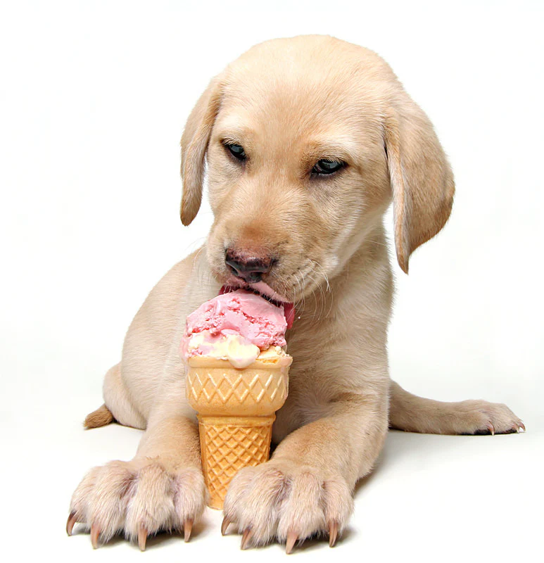

Pupyy Safe Ice Cream!

Learn how to make Homemade Dog Ice Cream and you can make your best friends healthy and nutritious treats to cool them down during the summer!
Ingredients
- 10 fresh strawberries, chopped
- 1 medium, ripe banana
- 1 cup (280grs) natural plain yogurt(lowfat/nonfat)
Steps
- Mash the strawberries using a potato masher. You want very small pieces of fruit so your dog can swallow it easily.
- Add in the banana and continue to mash, almost to puree
- Stir in the yogurt and mix all ingredients until well-combined
- Pour the mixture into freezer safe air-tight containers and then freeze for a minimum of 4 hours but preferably overnight. Ice cube trays are good to make small portions.
- Take treating your dog a step further by turning it into an ice cream sundae party!
- Keep the Ice Cream in the freezer for 8 weeks.
- * If you want the ice cream to be scoopable use Greek/Strained yogurt.